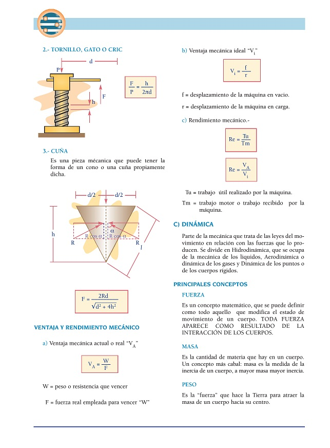
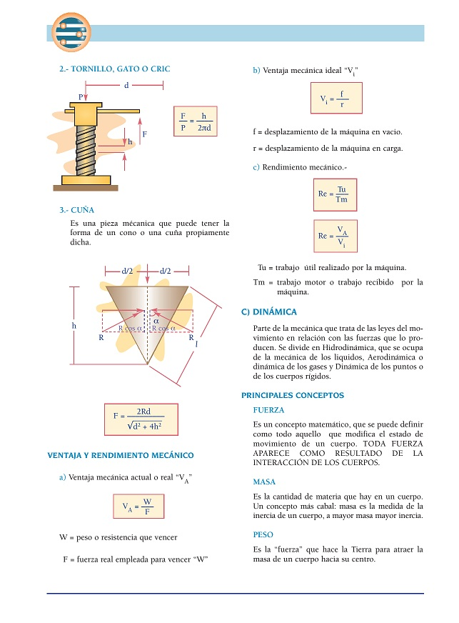
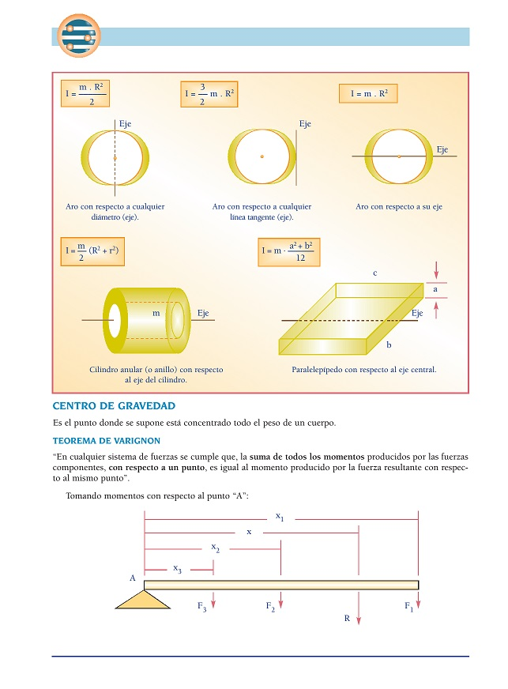
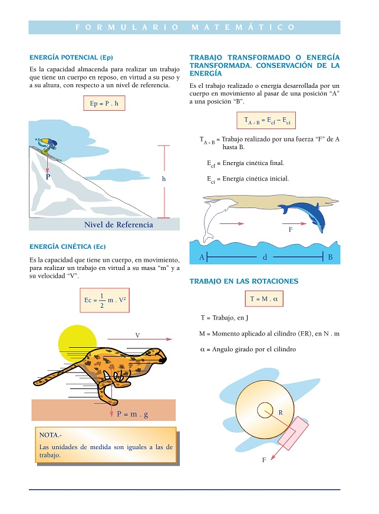
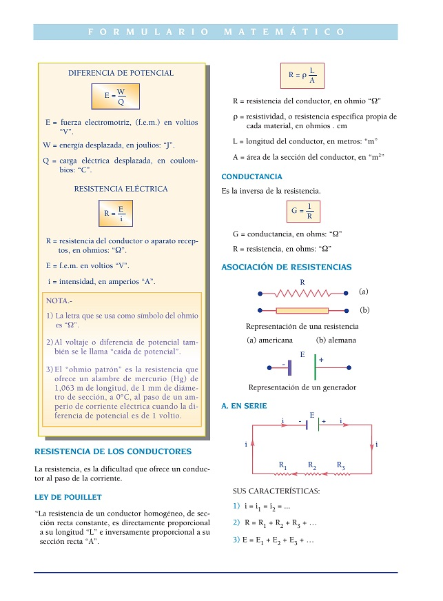
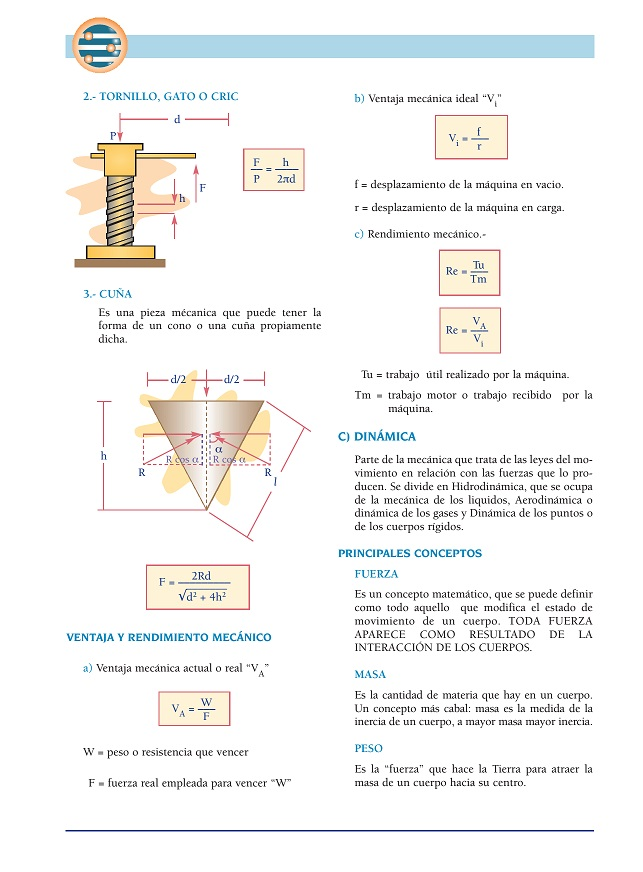
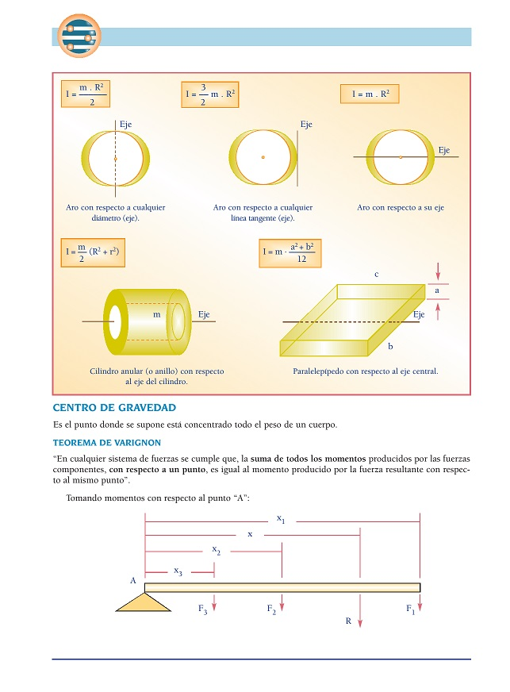
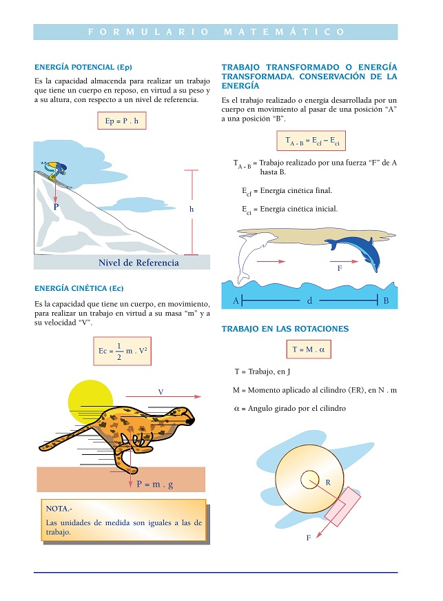
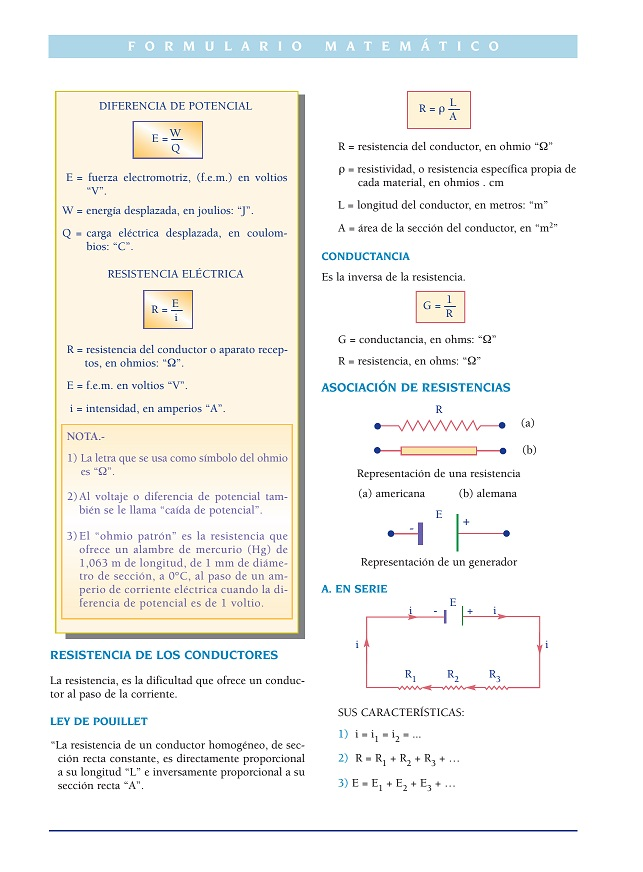

BACK
Bloques
BLOQUE 1
 

BLOQUE 2
 

BLOQUE 3
BLOQUE 4
Física Definiciones, Ecuaciones dimensionales, Sistema de unidades Unidades del sistema absoluto Unidades del sistema técnico gravitacional o práctico Unidades del sistema internacional de medida “SI”, Unidades suplementarias Unidades derivadas Convenciones básicas, Vectores, Magnitud, Representación gráfica de un vector Suma y resta de vectores, Métodos geométricos Método del paralelogramo Métodos analíticos, Dirección de la resultante Mecánica, Cinemática Conceptos, Movimiento rectilíneo uniforme (MRU) Movimiento variado, Aceleración Movimiento vertical, Movimiento compuesto, Movimiento parabólico Movimiento circunferencial uniforme (MCU) Velocidad o rapidez angular y período Movimiento circunferencial uniformemente variado (MCUV) Estática, Fuerza, Resultantes de un sistema de fuerzas Condiciones de equilibrio en un cuerpo, Teorema de Lamy Diagrama de cuerpo libre (DCL) o diagrama libre Descomposición de fuerzas en sus componentes rectangulares Máquinas simples, Tipo palanca Tipo plano inclinado Dinámica, Principales conceptos Segunda ley de Newton, Unidades de fuerza Rozamiento, fuerza de rozamiento o fricción Dinámica de rotación o rotación dinámica Momentos de inercia de algunos sólidos Centro de gravedad, Teorema de Varignon Posición del centro de gravedad, Centros de gravedad de figuras geométricas
Bloque 2Trabajo, Potencia y Energía Trabajo, Unidades de trabajo Equivalencias de unidades de trabajo, Potencia, Unidades de potencia, Energía Energía potencial (Ep), Energía cinética (Ec) Trabajo transformado o energía transformada, Trabajo en las rotaciones Energía cinética de rotación, Impulso y cantidad de movimiento El movimiento oscilatorio y el péndulo, Péndulo simple Elementos de un péndulo simple, Leyes del péndulo Péndulo que bate segundos, Fórmula general del péndulo Movimiento armónico simple o movimiento vibratorio armónico Resortes, Fuerzas deformadora: Ley de Hooke Velocidad, Aceleración, Período y frecuencia Cálculo de la velocidad “V”, Cálculo de la aceleración Velocidad y aceleración máximas, Período y frecuencia Densidad y peso específico, Relación entre densidad y peso específico Estática de los fluídos, Conceptos y definiciones, Presión Principio de Pascal, Prensa hidráulica Principio de la hidrostática, Presión hidrostática Ley fundamental de la hidrostática, Principio de Arquímides Relación entre el empuje y el peso específico de líquidos, Neumología El calor, Dilatación Calorimetría, Unidades para medir el calor, Calor específico “Ce” Calor sensible “Q” (calor ganado o perdido) Teorema fundamental de la calorimetría, Capacidad calorífica “Cc” Temperatura de equlibrio de una mezcla, Temperatura final “tf” Cambios de fase, Calores latentes, Transmisión de calor Transmisión del calor por conducción, Cantidad de calor trasmitido “Q” Trabajo mecánico del calor Termodinámica, Trabajo realizado por un gas “W” Calor absorbido por un gas “G”, Primera ley de la termodinámica Segunda ley de la termodinámica (Rudolf Clausius 1850) Electrostática, Primera ley de la electrostática Tabla triboeléctrica, Segunda ley de la electrostática:Ley de Coulomb Primitividad, Unidades eléctricas coulomb “C” Campo eléctrico, Campo de cargas iguales Campo de cargas distintas, Intensidad del campo eléctrico Potencial eléctrico, Diferencia de potencial Trabajo eléctrico, Capacidad eléctrica Capacidad de los conductores aislados Capacidad de uns esfera aislada, Condensadores Capacidad de un condensador, Capacidad de un condensador plano Capacidad de condensador esférico y cilíndrico, Asociación de condensadores Energía de un condensador, Electrodinámica Corriente eléctrica, Partes de un ciruito eléctrico Resistencia de los conductores, Ley de Pouillet, Conductancia Asociación de resistencias, En serie En paralelo, Fuerza electromotriz y resistencia total en un circuito
Bloque 3Corrientes derivadas, Ley de Kirchoff, Puente de Wheatstone Energía y potencia de la corriente eléctrica, Potencia de la corriente eléctrica Efecto Joule o ley de Joule, Rendimiento de la corriente eléctrica Magnetismo y electromagnetismo, Magnetismo Líneas de fuerza de un campo magnético, Leyes magnéticas Intensidad “B” de un punto del campo magnético Intensidad de campo magnético producida por un polo, Flujo magnético Densidad magnética “B”, Electromagnetismo Efecto Oersted, Regla de la mano derecha (de Ampere), Ley de Biot y Savart Intensidad de campo creada por un conductor circular Ley de la circulación de Ampere Bobina, Solenoide anular o toroidal de Rowland Densidad del flujo inducido “B” a través del núcleo, Efecto Faraday Ley de Faraday, Óptica, Velocidad de la luz Unidad de intensidad de la luz, Iluminación, Unidad de iluminación “E”
Bloque 4Flujo luminoso “f”, Intensidad luminosa “I”, Flujo de intensidad “fT” Reflexión de la luz Leyes de la reflexión regular, Espejos, Espejos planos, Espejos esféricos Elementos de un espejo esférico Rayos principales, Posición del objeto y la imagen en un espejo cóncavo Refracción de la luz, Indices de refracción, Leyes de la refracción Ángulo límite y reflexión total “L” Lámina de caras paralelas, Prisma óptico, Imágenes por refracción Lentes, Elementos de las lentes Rayos principales en las lentes convergentes y divergentes Construcción y posición de imágenes de lentes convergentes Fórmula de Descartes para las lentes, Construcción de la imagen de una lente divergente Potencia de un lente, Aumento de la lente Lentes gruesas de dos caras de cobertura, Potencia de lentes de contacto
BLOQUE 1

BLOQUE 2
 
BLOQUE 3
BLOQUE 4